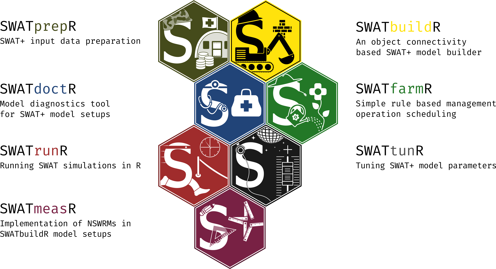

SWATtunR


The goal of SWATtunR is to help with the SWAT+ model calibration and validation. These functions were developed and tested for the implementation of modeling tasks in the OPTAIN project, Nordbalt-Ecosafe and LIFE SIP Vanduo. Functions are initially developed by Christoph Schuerz, which added important capability on top of other R tools designed for the SWAT/SWAT+ models. Therefore, we highly recommend trying and using these tools:
- SWATbuildR - R tool for building SWAT+ setups;
- SWATprepR - SWAT+ model input data preparation helper. The package is presented in the article Plunge, Szabó, et al. (2024);
- SWATfarmR - R tool for preparing management schedules for SWAT model;
- SWATdoctR - A collection of functions in R and routines for SWAT model calibration and model diagnostics. The package is presented in the article Plunge, Schürz, et al. (2024);
-
SWATrunR - R tool for running SWAT models for different parameters and scenarios. Please install branch names remove_legacy. It could be done using line like this
remotes::install_github("chrisschuerz/SWATrunR@remove_legacy") - SWATmeasR - R tool for implementing Natural/Small Water Retention Measures (NSWRMs) in the SWAT+ models and running scenarios.
Additionally, we recommend checking out the following packages, which can be used to build scripted workflows for SWAT+:
- SWATreadR - Read and write SWAT+ input and output files.
- SWATdata - SWAT project datasets for SWATrunR and SWATfarmR.

Detailed information about packages, workflow steps, input data, SWAT+ parameters, model calibration, validation, etc., could be found in the SWAT+ modeling protocol Christoph et al. (2022).
Installation
You can install the development version of SWATtunR from GitHub.
# If the package 'remotes' is not installed run first:
install.packages("remotes")
# The installation of `SWATprepR`.
remotes::install_github("biopsichas/SWATtunR")
This work was carried out within the OPTAIN project (Optimal strategies to retain and re-use water and nutrients in small agricultural catchments across different soil-climatic regions in Europe, cordis.europa.eu), which has received funding from the European Union’s Horizon 2020 research and innovation programme under grant agreement No. 862756.
It was also supported by the NORDBALT-ECOSAFE project, funded by the European Union’s Horizon Europe research and innovation programme under grant agreement No. 101060020.
And the LIFE22-IPE-LT-LIFE-SIP-Vanduo project (Integrated water management in Lithuania, reference: LIFE22-IPE-LT-LIFE-SIP Vanduo / 101104645, cinea.ec.europa.eu), funded by the European Union LIFE Programme under grant agreement No. 101104645.